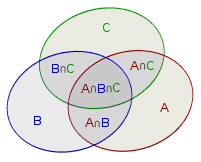

OI Wiki · prijevod · MatematikaOI Wiki · translation · Mathematics
Formula uključivanja-isključivanjaInclusion–exclusion principle
Sadržaj
- Uvod
- Definicija
- Prebrojavanje nenegativnih cjelobrojnih rješenja neodređene jednadžbe
- HAOI2008 硬币购物 (Kupovina novčićima)
- Problem bojenja podgrafova potpunog grafa
- Uključivanje-isključivanje u teoriji brojeva
- Poopćenje formule uključivanja-isključivanja
- Prebrojavanje DAG-ova
- Min-max uključivanje-isključivanje
- PKUWC2018 随机游走 (Slučajna šetnja)
- Literatura
Uvod
Uvodni primjer
Pretpostavimo da u razredu \(10\) učenika voli matematiku, \(15\) učenika voli kineski jezik, a \(21\) učenik voli programiranje. Koliko učenika u razredu voli barem jedan predmet?
Je li to \(10+15+21=46\) učenika? Nije, jer neki učenici možda istodobno vole matematiku i kineski jezik, ili kineski jezik i programiranje, a možda čak i sve troje.
Radi jednostavnosti, skupove učenika koji vole kineski jezik, matematiku odnosno programiranje označimo redom s \(A,B,C\); tada je ukupan broj učenika jednak \(|A\cup B\cup C|\). Kako smo upravo rekli, ako jednostavno zbrojimo brojeve elemenata \(|A|,|B|,|C|\) tih triju skupova, neki će elementi biti prebrojeni više puta, pa treba oduzeti \(|A\cap B|,|B\cap C|,|C\cap A|\); no time je jedan mali dio oduzet previše puta i treba ga vratiti, naime \(|A\cap B\cap C|\). Dakle

Poopćimo li gornji problem na opći slučaj, dobivamo dobro poznatu formulu uključivanja-isključivanja (inclusion–exclusion principle).
Definicija
Neka elementi skupa U imaju n različitih svojstava, neka se i-to svojstvo zove \(P_i\), a elementi koji imaju svojstvo \(P_i\) neka čine skup \(S_i\). Tada je
odnosno
Dokaz
Za svaki element binomnim teoremom izračunamo koliko je puta prebrojen. Za element x pretpostavimo da se pojavljuje u skupovima \(T_1,T_2,\cdots,T_m\); tada je broj njegovih pojavljivanja
Dakle, svaki je element prebrojen točno jednom, pa sve zajedno daje uniju. Time je dokaz završen.
Komplement
Za uniju skupova unutar univerzalnog skupa U može se koristiti formula uključivanja-isključivanja, dok se presjek skupova dobiva tako da se od univerzalnog skupa oduzme unija komplemenata:
Na desnu stranu dovoljno je primijeniti uključivanje-isključivanje.
Čitateljima koji su se već susreli s uključivanjem-isključivanjem gornje je gradivo poznato; njih više zanimaju primjene.
Stoga ćemo u nastavku dati 3 primjera različitih razina težine kako bismo pokazali primjenu formule uključivanja-isključivanja.
Prebrojavanje nenegativnih cjelobrojnih rješenja neodređene jednadžbe
Prebrojavanje nenegativnih cjelobrojnih rješenja neodređene jednadžbe
Zadana je neodređena jednadžba \(\sum_{i=1}^nx_i=m\) i \(n\) ograničenja \(x_i\leq b_i\), gdje je \(m,b_i \in \mathbb{N}\). Odredite broj nenegativnih cjelobrojnih rješenja jednadžbe.
Bez ograničenja
Ako nema ograničenja \(x_i\leq b_i\), broj nenegativnih cjelobrojnih rješenja neodređene jednadžbe \(\sum_{i=1}^nx_i=m\) jednak je \(\dbinom{m+n-1}{n-1}\).
Skica dokaza: metoda pregrada (stars and bars).
To je isto kao da \(m\) kuglica treba razdijeliti u \(n\) kutija, pri čemu neka kutija smije ostati prazna. Taj se problem ne može izravno riješiti binomnim koeficijentom.
Zato dodamo još \(n-1\) kuglicu; problem tada postaje: u nizu od \(m+n-1\) kuglice odabrati \(n-1\) kuglicu, a tih \(n-1\) kuglica dijeli niz na \(n\) dijelova koji točno odgovaraju (jedan na jedan) \(n\) kutijama. Broj načina da se među \(m+n-1\) kuglicom odabere \(n-1\) kuglica jest \(\dbinom{m+n-1}{n-1}\).
Model uključivanja-isključivanja
Pokušajmo zatim apstrahirati model formule uključivanja-isključivanja:
- Univerzalni skup U: nenegativna cjelobrojna rješenja neodređene jednadžbe \(\sum_{i=1}^nx_i=m\)
- Elementi: varijable \(x_i\).
- Svojstva: svojstvo varijable \(x_i\) jest uvjet koji \(x_i\) zadovoljava, tj. uvjet \(x_i\leq b_i\)
Cilj: veličina skupa u kojem sve varijable zadovoljavaju pripadna svojstva, tj. \(|\bigcap_{i=1}^nS_i|\).
To se može izračunati pomoću \(\left|\bigcap_{i=1}^{n}S_i\right|=|U|-\left|\bigcup_{i=1}^n\overline{S_i}\right|\). \(|U|\) se računa binomnim koeficijentom, a drugi se dio prirodno razvija formulom uključivanja-isključivanja.
Problem se tako svodi na računanje veličine presjeka nekih skupova \(\overline{S_{a_i}}\). Razmotrimo značenje skupa \(\overline{S_{a_i} }\): on označava broj rješenja za koja je \(x_{a_i}\geq b_{a_i}+1\), a presjek znači da su svi ti uvjeti ispunjeni istodobno. Stoga u neodređenoj jednadžbi koja odgovara tom presjeku neke varijable imaju ograničenje odozdo, a neke nemaju nikakvo ograničenje.
Možemo li se riješiti tih donjih ograničenja? Budući da tražimo nenegativna cjelobrojna rješenja, a donje su granice nekih varijabli veće od \(0\), jednostavno oduzmemo tu donju granicu i donja granica tih varijabli postaje \(0\), tj. nestaje. Stoga za
pripadna neodređena jednadžba glasi
pa se i to može izračunati binomnim koeficijentom. Niz \(a\) duljine \(k\) zapravo odgovara nabrajanju podskupova.
HAOI2008 硬币购物 (Kupovina novčićima)
HAOI2008 硬币购物 (Kupovina novčićima)
Postoje 4 vrste novčića; novčić i-te vrste ima vrijednost \(C_i\). Slijedi \(n\) upita; u svakom su upitu zadani broj novčića \(D_i\) svake vrste i cijena \(S\), a pitanje je na koliko se načina može platiti.
\(n\leq 10^3,S\leq 10^5\).
Rješavanje ruksakom (knapsack) imalo bi složenost \(O(4nS)\), što je neprihvatljivo. Najuočljivija značajka ovog zadatka jest da postoje samo četiri vrste novčića. Apstrahiramo li model, zapravo tražimo broj nenegativnih cjelobrojnih rješenja jednadžbe \(\sum_{i=1}^4C_ix_i=S,x_i\leq D_i\).
Primijenimo isto uključivanje-isključivanje: svojstvo varijable \(x_i\) jest \(x_i\leq D_i\). Uvrstimo li u formulu uključivanja-isključivanja, na kraju treba riješiti
što je neograničeni ruksak (unbounded knapsack). Taj se problem može unaprijed izračunati, pa je ukupna složenost zajedno s upitima \(O(4S+2^4n)\).
Implementacija
#include <iostream>
using namespace std;
constexpr long long S = 1e5 + 5;
long long c[5], d[5], n, s;
long long f[S];
int main() {
cin.tie(nullptr)->sync_with_stdio(false);
cin >> c[1] >> c[2] >> c[3] >> c[4] >> n;
f[0] = 1;
for (long long j = 1; j <= 4; j++)
for (long long i = 1; i < S; i++)
if (i >= c[j]) f[i] += f[i - c[j]]; // f[i]: broj načina da se novčićima sastavi cijena i
for (long long k = 1; k <= n; k++) {
cin >> d[1] >> d[2] >> d[3] >> d[4] >> s;
long long ans = 0;
for (long long i = 1; i < 16;
i++) { // uključivanje-isključivanje; budući da postoje 4 vrste novčića, petlja ide od 1 do 2^4-1=15
long long m = s, bit = 0;
for (long long j = 1; j <= 4; j++) {
if ((i >> (j - 1)) % 2 == 1) {
m -= (d[j] + 1) * c[j];
bit++;
}
}
if (m >= 0) ans += (bit % 2 * 2 - 1) * f[m];
}
cout << f[s] - ans << '\n';
}
return 0;
}
Problem bojenja podgrafova potpunog grafa
Prethodna su tri zadatka bila izravna primjena formule uključivanja-isključivanja; ovaj zadatak zahtijeva njezinu primjenu u obrnutom smjeru.
Problem bojenja podgrafova potpunog grafa
A i B vole bojiti grafove (ne nužno povezane), a pravilo im je da susjedni vrhovi moraju biti obojeni istom bojom. Danas A i B igraju igru na potpunom grafu \(G=(V,E)\) reda \(n\). Definiraju funkciju vrijednosti \(F(S)\), gdje je S skup bridova, \(S\subseteq E\). Vrijednost \(F(S)\) jest ukupan broj načina bojenja grafa \(G'=(V,S)\) s \(m\) boja. Drugo im je pravilo: ako je \(|S|\) neparan, rezultat igrača A povećava se za \(F(S)\), inače se rezultat igrača B povećava za \(F(S)\). Pitanje je kolika je razlika rezultata igrača A i B.
Matematički oblik
Na prvi pogled nije očito kojim algoritmom pristupiti ovom zadatku, pa za ovakve nezgodne zadatke prvo apstrahiramo matematički oblik. Razlika rezultata zapravo je razlika po parnosti, pa se kao koeficijent može uzeti potencija broja -1. Tražimo
Model uključivanja-isključivanja
Uvjet da su susjedni vrhovi obojeni istom bojom shvatimo kao svojstvo. Ovdje se najprije ne držimo pravila bojenja, nego pretpostavimo da graf izravno bojimo s m boja. Graf \(G'=(V,S)\) shvaćamo kao element. Svojstvo \(x_i=x_j\) znači da su vrhovi i,j obojeni istom bojom (uočite da se ne zahtijeva da između i i j postoji brid).
Skup koji odgovara svojstvu \(x_i=x_j\) definiramo kao \(Q_{i,j}\); on sadrži sva bojenja grafova \(G'\) koja zadovoljavaju to svojstvo, njegova je veličina broj bojenja koja zadovoljavaju to svojstvo, a njegovi su elementi obojeni grafovi \(G'\) koji zadovoljavaju to svojstvo.
Vratimo se zadatku: „susjedni vrhovi moraju biti obojeni istom bojom” može se shvatiti kao presjek nekoliko skupova \(Q\). Stoga možemo zapisati
Desna strana gornje jednakosti označava broj bojenja za koja za svaki brid \((i,j)\) iz S vrijedi \(x_i=x_j\), a to je upravo \(F(S)\).
Zar ne miriše na uključivanje-isključivanje? Budući da formula uključivanja-isključivanja sama po sebi nema oblik s uređenim parovima, sve bridove \((i,j)\) preslikamo na \(T=\frac{n(n+1)}{2}\) cijelih brojeva: pretpostavimo da se \((i,j)\) preslikava u \(k,1\leq k\leq T\), a istodobno se \(Q_{i,j}\) preslikava u \(Q_k\). Svojstvo \(x_i=x_j\) tada definiramo kao \(P_k\).
Istodobno se S može prikazati kao skup nekoliko brojeva k, tj. \(S\iff K=\{k_1,k_2,\cdots,k_m\}\). (Drugim riječima, uspostavili smo ekvivalenciju između skupova bridova i skupova brojeva.)
A skupu E odgovara skup \(M=\left\{1,2,\cdots,\frac{n(n+1)}{2}\right\}\). Dakle
Analiza u obrnutom smjeru
Razvijmo traženi izraz
i pojavljuje se razvijeni oblik formule uključivanja-isključivanja; stoga ovaj izraz izvedemo u obrnutom smjeru
Razmotrimo sada značenje desne strane: dovoljno je da bude ispunjen bilo koji od uvjeta \(1\sim T\), tj. to je broj bojenja u kojima postoje dva vrha iste boje (ne nužno susjedna)! Znamo da je univerzalni skup svih bojenja \(U\) i očito je \(|U|=m^n\). Prijelazom na komplement tražimo broj bojenja u kojima su svaka dva vrha različite boje, tj. \(A_m^n=\frac{m!}{(m-n)!}\). Stoga
Pri rješavanju ovog zadatka najprije smo apstrahirali njegov matematički oblik, zatim krenuli od uvjeta u zadatku koji nosi najviše informacija, definicije funkcije \(F(S)\), i pretvorili je u presjek, uniju i komplement skupova. Potom smo izraz pretvorili u oblik formule uključivanja-isključivanja i izvođenjem u obrnutom smjeru dobili konačni rezultat. Ovaj zadatak pokazuje upravo obrnutu primjenu formule uključivanja-isključivanja.
Uključivanje-isključivanje u teoriji brojeva
Formulom uključivanja-isključivanja mogu se elegantno riješiti neki problemi iz teorije brojeva.
Broj parova s najvećim zajedničkim djeliteljem k pomoću uključivanja-isključivanja
Razmotrimo sljedeći problem:
Broj parova s najvećim zajedničkim djeliteljem \(k\)
Neka je \(1 \le x, y \le N\) i neka \(f(k)\) označava broj uređenih parova \((x, y)\) čiji je najveći zajednički djelitelj \(k\). Odredite vrijednosti \(f(1)\) do \(f(N)\).
Ovaj se zadatak svakako može riješiti Eulerovom funkcijom ili Möbiusovom inverzijom, ali nijedan od tih načina nije tako jednostavan kao formula uključivanja-isključivanja.
Prema formuli uključivanja-isključivanja, najprije pronađemo sve parove kojima je \(k\) zajednički djelitelj, zatim iz njih izbacimo sve parove kojima je neki višekratnik od \(k\) zajednički djelitelj, a preostali su parovi upravo oni kojima je \(k\) najveći zajednički djelitelj. Dakle \(f(k)=\) broj parova kojima je \(k\) zajednički djelitelj \(-\) broj parova kojima je neki višekratnik od \(k\) zajednički djelitelj.
Nadalje, broj parova kojima je neki višekratnik od \(k\) zajednički djelitelj jednak je zbroju brojeva parova kojima je neki višekratnik od \(k\) najveći zajednički djelitelj. Stoga možemo zapisati sljedeći izraz:
Budući da za \(k>N/2\) možemo izravno izračunati \(f(k)= \lfloor (N/k) \rfloor ^2\), možemo ići obrnutim redom i računati od \(f(N)\) do \(f(1)\). Tako smo zadatak riješili formulom uključivanja-isključivanja.
for (long long k = N; k >= 1; k--) {
f[k] = (N / k) * (N / k);
for (long long i = k + k; i <= N; i += k) f[k] -= f[i];
}
Vremenska složenost gornjeg postupka jest \(O( \sum_{i=1}^{N} N/i)=O(N \sum_{i=1}^{N} 1/i)=O(N \log N)\).
Kao bonus, evo tri zadatka s istim rješenjem za vježbu.
- Luogu P2398 GCD SUM
- Luogu P2158 [SDOI2008] 仪仗队 (Počasna garda)
- Luogu P1447 [NOI2010] 能量采集 (Prikupljanje energije)
Izvod Eulerove funkcije pomoću uključivanja-isključivanja
Razmotrimo sljedeći problem:
Formula za Eulerovu funkciju
Odredite Eulerovu funkciju \(\varphi(n)\), gdje je \(\varphi(n)=|\{1\leq x\leq n|\gcd(x,n)=1\}|\).
Izravno računanje ima složenost \(O(n\log n)\), linearnim sitom \(O(n)\), a Du sitom \(O(n^{\frac{2}{3}})\) (doduše, zašto uopće spominjati Du sito kad uvodni teorijsko-brojevni zadatak rješavamo uključivanjem-isključivanjem); u nastavku ćemo formulu za Eulerovu funkciju izvesti uključivanjem-isključivanjem.
Da bismo provjerili jesu li dva broja relativno prosta, najprije rastavimo na proste faktore
Tada se zahtijeva da za svaki \(p_i\) broj \(x\) nije višekratnik od \(p_i\), tj. \(p_i\nmid x\). To shvatimo kao svojstvo kojem odgovara skup \(S_i\), pa vrijedi
Veličina univerzalnog skupa jest \(|U|=n\), a \(\overline{S_i}\) je skup određen uvjetom \(p_i\mid x\), pa je očito \(|\overline{S_i}|=\frac{n}{p_i}\), iz čega slijedi
Stoga dobivamo
a to je upravo matematički izraz za Eulerovu funkciju.
Poopćenje formule uključivanja-isključivanja
Formula uključivanja-isključivanja često se koristi u problemima prebrojavanja skupova; za dvije funkcije skupova \(f(S),g(S)\), ako je
onda vrijedi
Dokaz
Dokažimo to ukratko. Krećemo od desne strane jednakosti:
Primjećujemo da drugi dio sume ne ovisi o \(Q\), pa iz njega uklonimo \(Q\):
Označimo funkciju skupa \(P\) s \(F(P)=\sum_{T\subseteq P}(-1)^{|P|-|T|}\) i pojednostavnimo je:
Stoga je vrijednost polaznog izraza
Analizom vidimo da je samo za \(|S\setminus Q|=0\) vrijednost \(0^0=1\); tada je \(Q=S\), a doprinos rezultatu jest \(g(S)\). U ostalim je slučajevima \(0^{|S\setminus Q|}=0\), pa doprinosa nema. Tako dobivamo
Time je tvrdnja dokazana.
Korolar
Ovaj oblik ima i sljedeći korolar. Ako za funkcije \(f(S),g(S)\) u univerzalnom skupu \(U\) vrijedi
onda je
Taj je korolar zapravo oblik s komplementima, a dokaz je analogan.
Prebrojavanje DAG-ova
Prebrojavanje DAG-ova
Prebrojite označene usmjerene acikličke grafove s \(n\) vrhova, modulo \(10^9+7\). \(n\leq 5\times 10^3\).
Izravni DP
Razmotrimo DP: neka \(f[i,j]\) označava broj DAG-ova s \(i\) vrhova od kojih \(j\) vrhova ima ulazni stupanj \(0\). Pretpostavimo da nakon uklanjanja tih \(j\) vrhova \(k\) vrhova ima ulazni stupanj \(0\); tada je prije uklanjanja svaki od tih \(k\) vrhova bio spojen s barem nekima od tih \(j\) vrhova, što daje \(2^j-1\) mogućnosti; osim bridova prema tih \(k\) vrhova, tih \(j\) vrhova može biti proizvoljno spojeno s preostalim vrhovima, što daje \(2^{i-j-k}\) mogućnosti. Stoga jednadžba glasi:
Složenost računanja gornjeg izraza jest \(O(n^3)\).
Opuštanje ograničenja
Definicija gornjeg DP-a, točno \(j\) vrhova ulaznog stupnja \(0\), prestroga je; može se opustiti na barem \(j\) vrhova ulaznog stupnja \(0\). Izravno definirajmo \(f[i]\) kao broj DAG-ova s \(i\) vrhova. Može se izravno primijeniti uključivanje-isključivanje. Promotrimo odabranih \(j\) vrhova: tih \(j\) vrhova može biti proizvoljno spojeno s preostalih \(i-j\) vrhova, tj. \(\left(2^{i-j}\right)^j=2^{(i-j)j}\) mogućnosti:
Složenost računanja gornjeg izraza jest \(O(n^2)\).
Min-max uključivanje-isključivanje
Za niz \(\{x_i\}\) koji zadovoljava relaciju potpunog uređaja i čiji se elementi mogu zbrajati i oduzimati, neka je njegova duljina \(n\) i neka je \(S=\{1,2,3,\cdots,n\}\); tada vrijedi:
Dokaz: Konstruirajmo preslikavanje na običnu formulu uključivanja-isključivanja. Za \(x\in S\) pretpostavimo da je \(x\) \(k\)-ti najmanji element. Definirajmo preslikavanje \(f:x\mapsto \{1,2,\cdots,k\}\). Očito je to bijekcija.
Lako se vidi da za \(x,y\in S\) vrijedi \(f(\min(x,y))=f(x)\cap f(y)\) i \(f(\max(x,y))=f(x)\cup f(y)\). Stoga dobivamo:
Zatim \(\left|f\left(\max_{i\in S}{x_i}\right)\right|\) preslikamo natrag u \(\max_{i\in S}{x_i}\); za \(\min\) je analogno.
Time je dokaz završen.
No možda vam se ova formula čini vrlo glupom – maksimum se ionako može izravno izračunati. Min-max uključivanje-isključivanje toliko je važno zato što vrijedi i za očekivanja, tj.:
Dokaz: Promotrimo jedan način računanja očekivanja:
gdje je \(y\) niz duljine \(n\).
Na \(\max\) s desne strane primijenimo prethodnu formulu:
Zamijenimo redoslijed sumiranja:
Za \(\min\) je analogno.
Time je dokaz završen.
Postoji i jača tvrdnja:
Dogovorno, ako je \(n< m\), onda je \(\dbinom nm=0\).
Dokaz: Bez smanjenja općenitosti neka je \(\forall 1\le i<n,x_i\le x_{i+1}\). Tada vrijedi:
Budući da vrijedi kombinatorni identitet \(\dbinom ab\dbinom bc=\dbinom ac\dbinom {a-c}{b-c}\), imamo:
Za \(i=n-k+1\):
inače:
Stoga:
Preostale su tri tvrdnje analogne.
Time je dokaz završen.
Iz min-max uključivanja-isključivanja možemo dobiti i sljedeću formulu:
jer \(\operatorname{lcm},\gcd,a^{1},a^{-1}\) redom odgovaraju \(\max,\min,+,-\); drugim riječima, to je min-max uključivanje-isključivanje primijenjeno na eksponente, pa formula prirodno vrijedi.
PKUWC2018 随机游走 (Slučajna šetnja)
PKUWC2018 随机游走 (Slučajna šetnja)
Zadano je stablo s \(n\) vrhova. Krećete iz vrha \(x\) i u svakom koraku s jednakom vjerojatnošću nasumično birate jedan brid incidentan s trenutačnim vrhom te prelazite preko njega.
Slijedi \(Q\) upita. U svakom je upitu zadan skup \(S\); odredite očekivani broj koraka ako, krenuvši iz \(x\), nasumično šećete sve dok svaki vrh iz skupa \(S\) ne bude posjećen barem jednom.
Posebno, smatra se da je vrh \(x\) (tj. početni vrh) već na početku posjećen jednom.
Rezultat se traži modulo \(998244353\).
\(1\le n\le 18,1\le Q\le 5000,1\le |S|\le n\).
Očekivani broj koraka šetnje ujedno je i vrijeme šetnje. Neka slučajna varijabla \(x_i\) označava trenutak prvog dolaska u vrh \(i\). Tada tražimo
Min-max uključivanjem-isključivanjem dobivamo
Za skup \(T\in[n]\) pokušajmo izračunati \(F(T)=E(\min_{i\in T}x_i)\).
Razmotrimo značenje \(E(\min_{i\in T}x_i)\): to je očekivano vrijeme prvog dolaska u neki vrh iz \(T\). Neka \(f(i)\) označava očekivano vrijeme da se, krenuvši iz vrha \(i\), prvi put stigne u neki vrh iz \(T\).
- Za \(i\in T\) vrijedi \(f(i)=0\).
- Za \(i\notin T\) vrijedi \(f(i)=1+\frac{1}{\text{deg}(i)}\sum_{(i,j)\in E}f(j)\).
Izravna Gaussova eliminacija ima složenost \(O(n^3)\), pa bi računanje \(F(T)\) za svaki \(T\) imalo ukupnu složenost \(O(2^nn^3)\), što je neprihvatljivo. Upotrijebit ćemo tehniku eliminacije na stablu.
Neka je korijen vrh \(1\), a roditelj vrha \(u\) neka je \(p_u\). Za list \(i\) vrijednost \(f(i)\) ovisi samo o roditelju vrha \(i\) (a može biti i \(f(i)=0\), što je još bolje). Stoga \(f(i)\) možemo zapisati u obliku \(f(i)=A_i+B_if(p_i)\), gdje se \(A_i,B_i\) mogu brzo izračunati.
Za unutarnji vrh \(i\) promotrimo niz njegove djece \(j_1,\cdots,j_k\). Budući da je \(f(j_e)=A_{j_e}+B_{j_e}f(i)\), dobivamo
Preuređivanjem dobivamo
Tako smo i \(f(i)\) zapisali u obliku \(A_i+B_if(p_i)\). Na taj način možemo ići unatrag sve do korijena, a korijen nema roditelja, što znači
Rješavanjem te jednadžbe dobivamo \(f(1)\), a zatim još jednim prolazom odozgo prema dolje dobivamo \(f(i)\) za svaki vrh. Tada je \(F(T)=f(x)\). Vremenska je složenost \(O(n)\).
Tako za svaki \(T\) možemo izračunati \(F(T)\) u ukupnoj vremenskoj složenosti \(O(2^nn)\).
Vratimo se na dio s uključivanjem-isključivanjem: znamo da je \(E(\max_{i\in S}x_i)=\sum_{T\subseteq S}(-1)^{|T|-1}F(T)\).
Neka je \(F'(T)=(-1)^{|T|-1}F(T)\); tada dalje dobivamo \(E(\max_{i\in S}x_i)=\sum_{T\subseteq S}F'(T)\). Stoga pomoću FMT-a (koji se naziva i prefiksnim sumama po podskupovima, FWT-om ili transformacijom „ili”) u vremenu \(O(2^nn)\) možemo izračunati \(E(\max_{i\in S}x_i)\) za svaki \(S\) i tako na upite odgovarati u \(O(1)\).
Zadaci za vježbu
Literatura
浅探容斥原理 (Kratki uvid u formulu uključivanja-isključivanja) – Wang Di, zbornik radova kandidata kineske nacionalne reprezentacije za informatičku olimpijadu 2013.
有标号的 DAG 计数系列问题 (Serija problema prebrojavanja označenih DAG-ova) – Cyhlnj
Contents
- Introduction
- Definition
- Counting nonnegative integer solutions of an indeterminate equation
- HAOI2008 硬币购物 (Coin shopping)
- Coloring subgraphs of a complete graph
- Inclusion–exclusion in number theory
- Generalization of the inclusion–exclusion principle
- Counting DAGs
- Min-max inclusion–exclusion
- PKUWC2018 随机游走 (Random walk)
- References
Introduction
Introductory example
Suppose that in a class \(10\) students like math, \(15\) students like Chinese, and \(21\) students like programming. How many students in the class like at least one subject?
Is it \(10+15+21=46\) students? No, because some students may like both math and Chinese, or Chinese and programming, or possibly even all three.
For convenience, denote the sets of students who like Chinese, math, and programming by \(A,B,C\) respectively; then the total number of students is \(|A\cup B\cup C|\). As we just said, if we simply add the numbers of elements \(|A|,|B|,|C|\) of these three sets, some elements are counted more than once, so we need to subtract \(|A\cap B|,|B\cap C|,|C\cap A|\); but then a small part has been subtracted too many times and needs to be added back, namely \(|A\cap B\cap C|\). That is,
Generalizing the problem above to the general case gives the well-known inclusion–exclusion principle.
Definition
Suppose the elements of U have n different properties, call the i-th property \(P_i\), and let the elements having property \(P_i\) form the set \(S_i\). Then
that is,
Proof
For every element, use the binomial theorem to compute how many times it is counted. For an element x, suppose it appears in the sets \(T_1,T_2,\cdots,T_m\); then the number of times it is counted is
So every element is counted exactly once, and putting everything together gives the union. This completes the proof.
Complement
The union of sets within the universal set U can be computed with the inclusion–exclusion principle, while the intersection of sets is obtained by subtracting the union of the complements from the universal set:
It suffices to apply inclusion–exclusion to the right-hand side.
Readers who have already met inclusion–exclusion know the material above well; what they care about more are the applications.
So next we give 3 example problems of different levels to show applications of the inclusion–exclusion principle.
Counting nonnegative integer solutions of an indeterminate equation
Counting nonnegative integer solutions of an indeterminate equation
Given the indeterminate equation \(\sum_{i=1}^nx_i=m\) and \(n\) constraints \(x_i\leq b_i\), where \(m,b_i \in \mathbb{N}\), find the number of nonnegative integer solutions of the equation.
Without the constraints
If there are no constraints \(x_i\leq b_i\), the number of nonnegative integer solutions of the indeterminate equation \(\sum_{i=1}^nx_i=m\) is \(\dbinom{m+n-1}{n-1}\).
Sketch of proof: stars and bars.
This is the same as distributing \(m\) balls into \(n\) boxes, where a box may be empty. This problem cannot be solved directly with a binomial coefficient.
So we add another \(n-1\) balls; the problem then becomes choosing \(n-1\) balls from a sequence of \(m+n-1\) balls, and these \(n-1\) balls split the sequence into \(n\) parts, which correspond one-to-one to the \(n\) boxes. The number of ways to choose \(n-1\) balls out of \(m+n-1\) balls is \(\dbinom{m+n-1}{n-1}\).
Inclusion–exclusion model
Next we try to abstract the model of the inclusion–exclusion principle:
- Universal set U: the nonnegative integer solutions of the indeterminate equation \(\sum_{i=1}^nx_i=m\)
- Elements: the variables \(x_i\).
- Properties: the property of \(x_i\) is the condition that \(x_i\) satisfies, namely the condition \(x_i\leq b_i\)
Goal: the size of the set in which all variables satisfy their corresponding properties, i.e. \(|\bigcap_{i=1}^nS_i|\).
This can be computed with \(\left|\bigcap_{i=1}^{n}S_i\right|=|U|-\left|\bigcup_{i=1}^n\overline{S_i}\right|\). \(|U|\) can be computed with a binomial coefficient, and the second part is naturally expanded with the inclusion–exclusion principle.
So the problem becomes computing the size of the intersection of some sets \(\overline{S_{a_i}}\). Consider the meaning of \(\overline{S_{a_i} }\): it denotes the number of solutions with \(x_{a_i}\geq b_{a_i}+1\), and the intersection means that all these conditions hold simultaneously. Therefore, in the indeterminate equation corresponding to this intersection, some variables have a lower bound, while others have no constraint.
Can we eliminate these lower bounds? Since we want nonnegative integer solutions and the lower bounds of some variables are greater than \(0\), we simply subtract the lower bound, which makes the lower bound of these variables \(0\), i.e. no lower bound at all. Therefore, for
the corresponding indeterminate equation is
so this can also be computed with a binomial coefficient. The array \(a\) of length \(k\) amounts to enumerating subsets.
HAOI2008 硬币购物 (Coin shopping)
HAOI2008 硬币购物 (Coin shopping)
There are 4 kinds of coins; the i-th kind has value \(C_i\). There are \(n\) queries; each query gives the number \(D_i\) of coins of each kind and a price \(S\), and asks for the number of ways to pay.
\(n\leq 10^3,S\leq 10^5\).
Solving it with a knapsack would have complexity \(O(4nS)\), which is unacceptable. The most noticeable feature of this problem is that there are only four kinds of coins. Abstracting the model, we are actually asked for the number of nonnegative integer solutions of the equation \(\sum_{i=1}^4C_ix_i=S,x_i\leq D_i\).
Using the same inclusion–exclusion approach, the property of \(x_i\) is \(x_i\leq D_i\). Plugging into the formula of the inclusion–exclusion principle, in the end we need to solve
which is an unbounded knapsack problem. This problem can be precomputed, so the total complexity including the queries is \(O(4S+2^4n)\).
Implementation
#include <iostream>
using namespace std;
constexpr long long S = 1e5 + 5;
long long c[5], d[5], n, s;
long long f[S];
int main() {
cin.tie(nullptr)->sync_with_stdio(false);
cin >> c[1] >> c[2] >> c[3] >> c[4] >> n;
f[0] = 1;
for (long long j = 1; j <= 4; j++)
for (long long i = 1; i < S; i++)
if (i >= c[j]) f[i] += f[i - c[j]]; // f[i]: number of ways to make up price i with the coins
for (long long k = 1; k <= n; k++) {
cin >> d[1] >> d[2] >> d[3] >> d[4] >> s;
long long ans = 0;
for (long long i = 1; i < 16;
i++) { // inclusion-exclusion; since there are 4 kinds of coins, loop from 1 to 2^4-1=15
long long m = s, bit = 0;
for (long long j = 1; j <= 4; j++) {
if ((i >> (j - 1)) % 2 == 1) {
m -= (d[j] + 1) * c[j];
bit++;
}
}
if (m >= 0) ans += (bit % 2 * 2 - 1) * f[m];
}
cout << f[s] - ans << '\n';
}
return 0;
}
Coloring subgraphs of a complete graph
The previous three problems were forward applications of the inclusion–exclusion principle; this problem requires using the inclusion–exclusion principle in reverse.
Coloring subgraphs of a complete graph
A and B like coloring graphs (not necessarily connected), and their rule is that adjacent vertices must be colored with the same color. Today A and B play a game on the complete graph \(G=(V,E)\) of order \(n\). They define an evaluation function \(F(S)\), where S is an edge set, \(S\subseteq E\). The value of \(F(S)\) is the total number of ways to color the graph \(G'=(V,S)\) with \(m\) colors. Their other rule is: if \(|S|\) is odd, A's score increases by \(F(S)\), otherwise B's score increases by \(F(S)\). Find the difference between the scores of A and B.
Mathematical form
At first glance the algorithmic direction of this problem is not obvious, so for tricky problems we first abstract the mathematical form. The score difference is a difference by parity, so a power of -1 can be used as the coefficient. We want
Inclusion–exclusion model
We treat "adjacent vertices are colored with the same color" as a property. Here we first ignore the coloring rule and assume we color the graph directly with m colors. We treat the graph \(G'=(V,S)\) as an element. The property \(x_i=x_j\) means that vertices i,j have the same color (note that it is not required that there is an edge between i and j).
The set corresponding to the property \(x_i=x_j\) is defined as \(Q_{i,j}\); it consists of all colorings of graphs \(G'\) satisfying this property, its size is the number of colorings satisfying the property, and its elements are the colored graphs \(G'\) satisfying the property.
Back to the problem: "adjacent vertices must be colored with the same color" can be understood as the intersection of several sets \(Q\). So we can write
The right-hand side of the formula above means the number of colorings in which \(x_i=x_j\) holds for every edge \((i,j)\) in S, which is exactly \(F(S)\).
Doesn't it smell like inclusion–exclusion? Since the inclusion–exclusion principle itself has no form with pairs, we map all edges \((i,j)\) to \(T=\frac{n(n+1)}{2}\) integers: suppose \((i,j)\) is mapped to \(k,1\leq k\leq T\), and at the same time \(Q_{i,j}\) is mapped to \(Q_k\). The property \(x_i=x_j\) is then defined as \(P_k\).
At the same time, S can be represented as a set of several k's, i.e. \(S\iff K=\{k_1,k_2,\cdots,k_m\}\). (In other words, we have established an equivalence between edge sets and sets of numbers.)
And E corresponds to the set \(M=\left\{1,2,\cdots,\frac{n(n+1)}{2}\right\}\). Hence
Reverse analysis
Expanding the expression we want,
the expanded form of the inclusion–exclusion principle appears, so we derive this expression in reverse:
Now consider the meaning of the right-hand side: it suffices that any one of the conditions \(1\sim T\) holds, i.e. it is the number of colorings in which there exist two vertices of the same color (not necessarily adjacent)! We know that the universal set of colorings is \(U\), and clearly \(|U|=m^n\). Turning to the complement, we want the number of colorings in which every two vertices have different colors, namely \(A_m^n=\frac{m!}{(m-n)!}\). Therefore
To solve this problem, we first abstracted the mathematical form of the problem, then started from the condition carrying the most information, the definition of the function \(F(S)\), and turned it into intersections, unions and complements of sets. Then we transformed the expression into the form of the inclusion–exclusion principle and derived in reverse the final result. What this problem shows is precisely the reverse use of the inclusion–exclusion principle.
Inclusion–exclusion in number theory
The inclusion–exclusion principle can elegantly solve some number-theoretic problems.
Counting pairs with greatest common divisor k by inclusion–exclusion
Consider the following problem:
Counting pairs with greatest common divisor \(k\)
Let \(1 \le x, y \le N\), and let \(f(k)\) denote the number of ordered pairs \((x, y)\) whose greatest common divisor is \(k\). Find the values \(f(1)\) to \(f(N)\).
This problem can certainly be solved with Euler's totient function or Möbius inversion, but neither is as simple as using the inclusion–exclusion principle.
By the inclusion–exclusion principle, first find all pairs having \(k\) as a common divisor, then remove all pairs having a multiple of \(k\) as a common divisor; the remaining pairs are exactly those having \(k\) as their greatest common divisor. That is, \(f(k)=\) the number of pairs having \(k\) as a common divisor \(-\) the number of pairs having a multiple of \(k\) as a common divisor.
Furthermore, the number of pairs having a multiple of \(k\) as a common divisor equals the sum of the numbers of pairs having a multiple of \(k\) as their greatest common divisor. So we can write the following expression:
Since for \(k>N/2\) we can directly compute \(f(k)= \lfloor (N/k) \rfloor ^2\), we can go backwards and compute from \(f(N)\) down to \(f(1)\). Thus we have solved this problem with the inclusion–exclusion principle.
for (long long k = N; k >= 1; k--) {
f[k] = (N / k) * (N / k);
for (long long i = k + k; i <= N; i += k) f[k] -= f[i];
}
The time complexity of the method above is \(O( \sum_{i=1}^{N} N/i)=O(N \sum_{i=1}^{N} 1/i)=O(N \log N)\).
As a bonus, here are three problems with the same solution to practice on.
- Luogu P2398 GCD SUM
- Luogu P2158 [SDOI2008] 仪仗队 (Honor guard)
- Luogu P1447 [NOI2010] 能量采集 (Energy collection)
Deriving Euler's totient function by inclusion–exclusion
Consider the following problem:
Formula for Euler's totient function
Compute Euler's totient function \(\varphi(n)\), where \(\varphi(n)=|\{1\leq x\leq n|\gcd(x,n)=1\}|\).
Direct computation is \(O(n\log n)\), the linear sieve is \(O(n)\), and Du's sieve is \(O(n^{\frac{2}{3}})\) (though why drag Du's sieve into an introductory number theory problem solved by inclusion–exclusion); next we derive the formula for Euler's totient function by inclusion–exclusion.
To decide whether two numbers are coprime, first factor into primes:
Then we require that for every \(p_i\), \(x\) is not a multiple of \(p_i\), i.e. \(p_i\nmid x\). Treat this as a property with corresponding set \(S_i\); then
The size of the universal set is \(|U|=n\), and \(\overline{S_i}\) is the set determined by \(p_i\mid x\), so clearly \(|\overline{S_i}|=\frac{n}{p_i}\), from which it follows that
Hence we get
which is exactly the mathematical expression of Euler's totient function.
Generalization of the inclusion–exclusion principle
The inclusion–exclusion principle is often used in counting problems on sets; for two set functions \(f(S),g(S)\), if
then
Proof
Let us prove it briefly. We start from the right-hand side of the equation:
We notice that the second sum does not depend on \(Q\), so we remove \(Q\) from it:
Define the function of a set \(P\) as \(F(P)=\sum_{T\subseteq P}(-1)^{|P|-|T|}\) and simplify it:
So the value of the original expression is
Analyzing this, only when \(|S\setminus Q|=0\) do we have \(0^0=1\); then \(Q=S\) and the contribution to the answer is \(g(S)\). Otherwise \(0^{|S\setminus Q|}=0\), which contributes nothing. Thus we get
This completes the proof.
Corollary
This form also has the following corollary. In the universal set \(U\), for functions \(f(S),g(S)\), if
then
This corollary is really the complement form, and the proof is similar.
Counting DAGs
Counting DAGs
Count the labeled directed acyclic graphs on \(n\) vertices, modulo \(10^9+7\). \(n\leq 5\times 10^3\).
Direct DP
Consider a DP: define \(f[i,j]\) as the number of DAGs with \(i\) vertices in which \(j\) vertices have in-degree \(0\). Suppose that after removing these \(j\) vertices, \(k\) vertices have in-degree \(0\); then before the removal each of these \(k\) vertices had edges from at least some of the \(j\) vertices, which gives \(2^j-1\) cases; and besides the edges to these \(k\) vertices, the \(j\) vertices can be connected arbitrarily to the remaining vertices, which gives \(2^{i-j-k}\) cases. So the recurrence is:
The complexity of computing the formula above is \(O(n^3)\).
Relaxing the constraint
The definition of the DP above, exactly \(j\) vertices of in-degree \(0\), is too strict; it can be relaxed to at least \(j\) vertices of in-degree \(0\). Directly define \(f[i]\) as the number of DAGs with \(i\) vertices. We can apply inclusion–exclusion directly. Consider the chosen \(j\) vertices: these \(j\) vertices can be connected arbitrarily to the remaining \(i-j\) vertices, i.e. \(\left(2^{i-j}\right)^j=2^{(i-j)j}\) cases:
The complexity of computing the formula above is \(O(n^2)\).
Min-max inclusion–exclusion
For a sequence \(\{x_i\}\) satisfying a total order relation whose elements can be added and subtracted, let its length be \(n\) and let \(S=\{1,2,3,\cdots,n\}\); then:
Proof: Consider building a mapping to the ordinary inclusion–exclusion principle. For \(x\in S\), suppose \(x\) is the \(k\)-th smallest element. Define a mapping \(f:x\mapsto \{1,2,\cdots,k\}\). Clearly this is a bijection.
Then it is easy to see that for \(x,y\in S\), \(f(\min(x,y))=f(x)\cap f(y)\) and \(f(\max(x,y))=f(x)\cup f(y)\). Therefore we get:
Then map \(\left|f\left(\max_{i\in S}{x_i}\right)\right|\) back to \(\max_{i\in S}{x_i}\); \(\min\) is similar.
This completes the proof.
But you may find this formula very silly – the maximum can obviously be computed directly. The reason min-max inclusion–exclusion is so important is that it also holds for expectations, i.e.:
Proof: Consider one way of computing the expectation:
where \(y\) is a sequence of length \(n\).
Apply the previous formula to the \(\max\) on the right:
Swap the order of summation:
\(\min\) is similar.
This completes the proof.
There is an even stronger statement:
By convention, if \(n< m\) then \(\dbinom nm=0\).
Proof: Without loss of generality assume \(\forall 1\le i<n,x_i\le x_{i+1}\). Then:
Also, by the combinatorial identity \(\dbinom ab\dbinom bc=\dbinom ac\dbinom {a-c}{b-c}\), we have:
When \(i=n-k+1\):
Otherwise:
Therefore:
The remaining three are similar.
This completes the proof.
From min-max inclusion–exclusion we can also obtain the following formula:
because \(\operatorname{lcm},\gcd,a^{1},a^{-1}\) correspond respectively to \(\max,\min,+,-\); in other words, this is min-max inclusion–exclusion applied to the exponents, so it naturally holds.
PKUWC2018 随机游走 (Random walk)
PKUWC2018 随机游走 (Random walk)
Given a tree with \(n\) vertices, you start from \(x\) and at each step choose uniformly at random one of the edges incident to the current vertex and walk along it.
There are \(Q\) queries. Each query gives a set \(S\); find the expected number of steps if, starting from \(x\), you keep walking randomly until every vertex in the set \(S\) has been visited at least once.
In particular, the vertex \(x\) (i.e. the starting point) is considered to have been visited once at the very beginning.
The answer is taken modulo \(998244353\).
\(1\le n\le 18,1\le Q\le 5000,1\le |S|\le n\).
The expected number of steps of the walk is also the time of the walk. Let the random variable \(x_i\) denote the time of the first visit to vertex \(i\). Then what we want is
By min-max inclusion–exclusion we get
For a set \(T\in[n]\), consider computing \(F(T)=E(\min_{i\in T}x_i)\).
Consider the meaning of \(E(\min_{i\in T}x_i)\): it is the expected time of the first visit to some vertex in \(T\). Let \(f(i)\) denote the expected time to first reach some vertex in \(T\) starting from vertex \(i\).
- For \(i\in T\), \(f(i)=0\).
- For \(i\notin T\), \(f(i)=1+\frac{1}{\text{deg}(i)}\sum_{(i,j)\in E}f(j)\).
Direct Gaussian elimination has complexity \(O(n^3)\), so computing \(F(T)\) for every \(T\) would have total complexity \(O(2^nn^3)\), which is unacceptable. We use the technique of elimination on a tree.
Let the root be vertex \(1\), and let the parent of vertex \(u\) be \(p_u\). For a leaf \(i\), \(f(i)\) only depends on the parent of \(i\) (or possibly \(f(i)=0\), which is even better). So we can write \(f(i)\) in the form \(f(i)=A_i+B_if(p_i)\), where \(A_i,B_i\) can be computed quickly.
For a non-leaf vertex \(i\), consider its sequence of children \(j_1,\cdots,j_k\). Since \(f(j_e)=A_{j_e}+B_{j_e}f(i)\), we get
Rearranging gives
So we have written \(f(i)\) in the form \(A_i+B_if(p_i)\) as well. In this way we can work backwards all the way to the root, and the root has no parent, which means
Solving this equation gives \(f(1)\), and another top-down pass gives \(f(i)\) for every vertex. Then \(F(T)=f(x)\). The time complexity is \(O(n)\).
In this way we can compute \(F(T)\) for every \(T\) in total time \(O(2^nn)\).
Back to the inclusion–exclusion part: we know that \(E(\max_{i\in S}x_i)=\sum_{T\subseteq S}(-1)^{|T|-1}F(T)\).
Let \(F'(T)=(-1)^{|T|-1}F(T)\); then we further get \(E(\max_{i\in S}x_i)=\sum_{T\subseteq S}F'(T)\). So we can use FMT (also called subset prefix sums, or the FWT OR transform) to compute \(E(\max_{i\in S}x_i)\) for every \(S\) in \(O(2^nn)\) time, and then answer queries in \(O(1)\).
Exercises
References
浅探容斥原理 (A brief look at the inclusion–exclusion principle) – Wang Di, collected papers of the candidates for the Chinese national team for the informatics olympiad, 2013
有标号的 DAG 计数系列问题 (A series of problems on counting labeled DAGs) – Cyhlnj